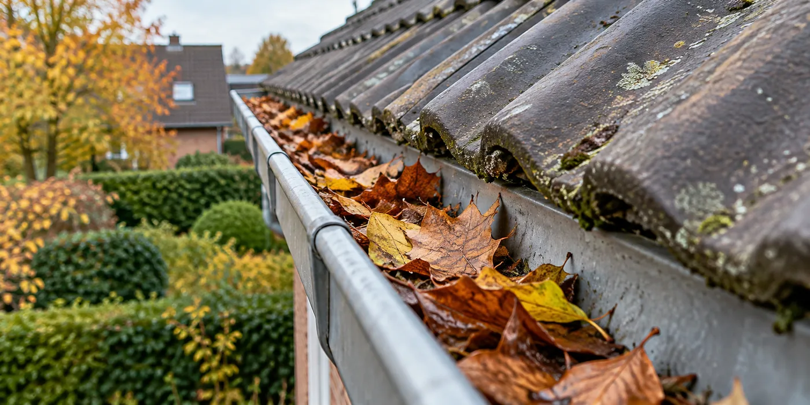

Begin met waarnemingen, niet met een materiaalkeuze
Noteer wanneer je vocht ziet: tijdens slagregen, na een lange bui of juist op koude ochtenden. Maak foto’s vanuit een veilige plek en beschrijf de ruimte waarin het probleem optreedt. Die informatie helpt een dakwerker om de oorzaak te onderzoeken. Een vlek aan het plafond bewijst op zichzelf niet dat de dakbedekking overal versleten is. Vraag een diagnose voordat je een volledige vervanging bespreekt.
Vraag ook naar de afwatering
Laat goten, uitlopen en aansluitingen mee beoordelen. Bij een plat dak is onderhoud een afzonderlijk aandachtspunt, ook wanneer de afdichting er netjes uitziet. Vraag wie de controle uitvoert en hoe vaststellingen worden vastgelegd. Laat beoordelen of er een terugkerend probleem is; een eenmalige schoonmaak kan een verkeerde aansluiting of beschadigde afvoer niet oplossen.

Scheid dringende en geplande werken
Vraag twee duidelijke lijsten: ingrepen die nodig zijn om nieuwe schade te beperken en verbeteringen voor de langere termijn. Zo kun je een kleine herstelling vergelijken met een renovatie zonder dat beide opdrachten door elkaar lopen. Leg vast wie je contacteert wanneer het tijdens de wachttijd opnieuw lekt en welke tijdelijke bescherming is afgesproken.
Wat doe je met het inspectieverslag?
Vraag een verslag dat plaats, oorzaak of onderzoeksvraag en voorgestelde ingreep uit elkaar houdt. Zet onbevestigde vermoedens niet op dezelfde lijn als vastgestelde schade. Als je meerdere adviezen vraagt, stuur dan telkens dezelfde foto’s en voorgeschiedenis mee. Zo voorkom je dat iedere vakman een andere opdracht interpreteert. Bewaar ook een antwoord wanneer er geen dringende ingreep nodig blijkt: dat geeft je een startpunt voor het onderhoud dat later volgt.
Een praktisch voorbeeld
Je ziet een vlek na wind uit één richting. Een inspectie kan dan beginnen bij aansluitingen aan die zijde, terwijl de rest van het dak afzonderlijk wordt beoordeeld. Dat is een onderzoeksroute, geen diagnose op afstand.
Illustratief scenario, geen klantcase.
Neem dit mee naar je gesprek
- Foto’s en data van vochtplekken
- Controle van goten en aansluitingen
- Dringende werken apart geprijsd
- Afspraken voor nieuwe lekkages
Veelgestelde vraag
Moet elk oud dak vóór de winter vervangen worden?
Nee. Laat de toestand beoordelen. Leeftijd alleen zegt niet welke concrete herstelling nodig is.
Bron en achtergrond
Buildwise: officiële of technische achtergrond bij dit onderwerp ↗
Geraadpleegd op 13 oktober 2026. De praktische checklist en het voorbeeld zijn redactionele uitwerkingen. Fabrikantinformatie geldt voor de beschreven producten; ze is geen algemene garantie voor andere systemen.
Wat betekent dit voor jouw woning?
Gebruik de calculator voor een eerste indicatie. Een vakman beoordeelt jouw situatie en bevestigt de uitvoering en definitieve prijs.
Bekijk de dakwerkencalculator →